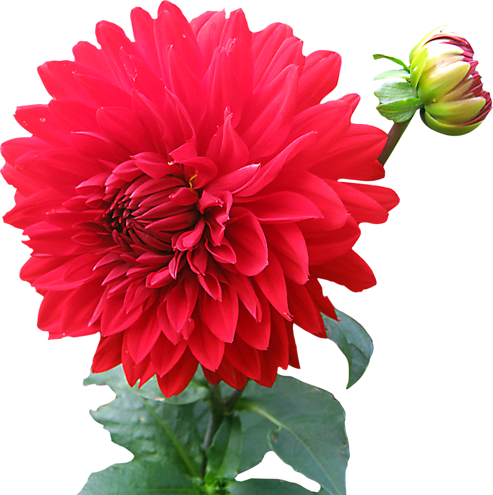
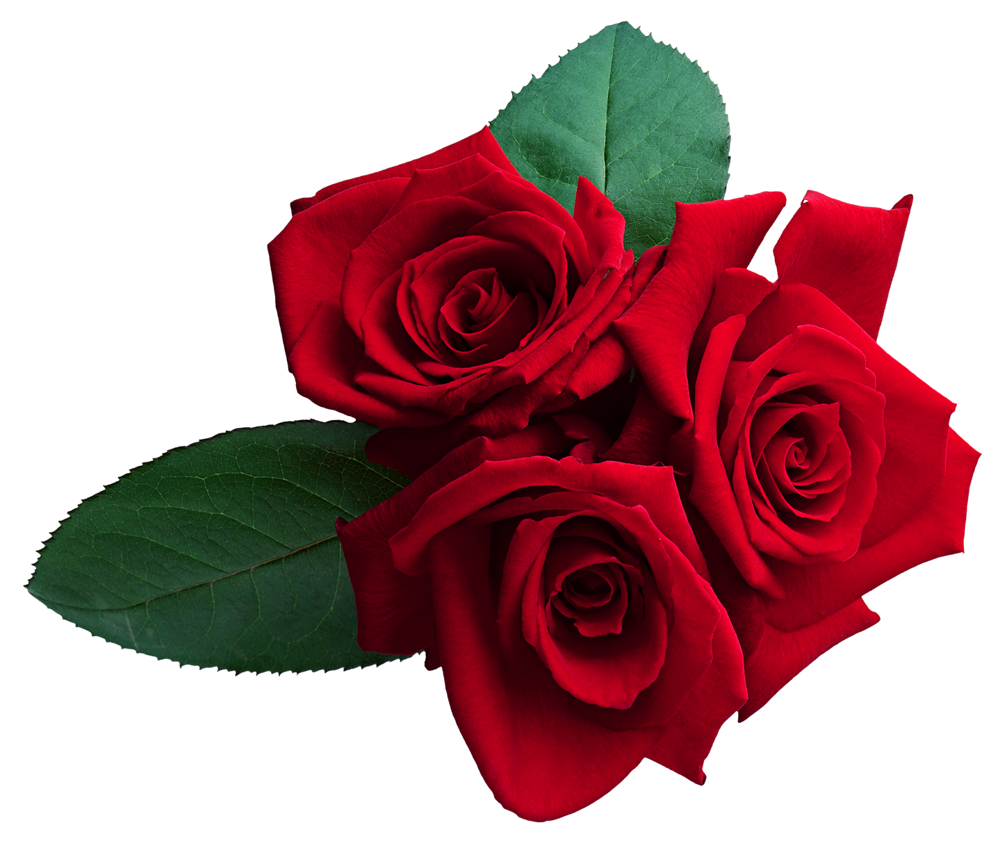
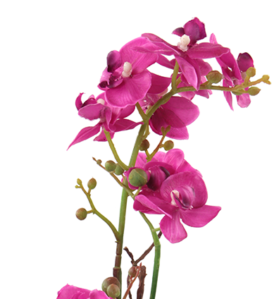
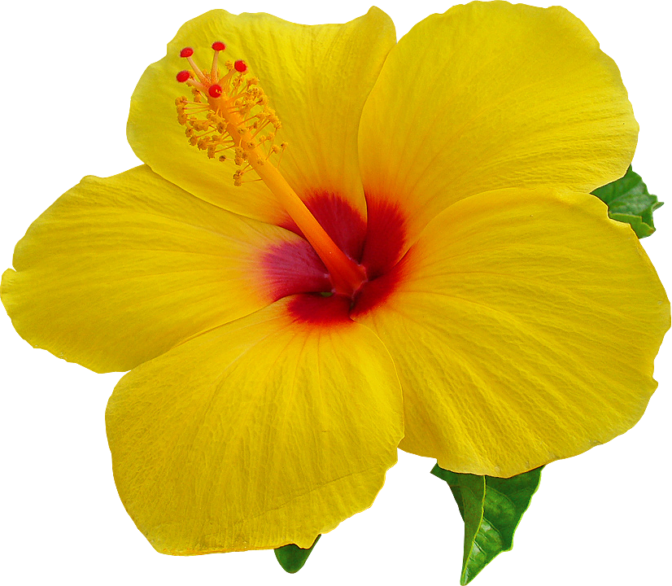

-
Dália
A flor dália é conhecida por sua beleza vibrante e variada, com pétalas que podem assumir uma ampla gama de cores e formas. Originária das Américas, ela simboliza a elegância e a gratidão. As dahlias são populares em arranjos florais e jardins devido à sua exuberância e diversidade. Seu encanto e singularidade a tornam uma escolha encantadora para decorar espaços e expressar sentimentos.
-
Rosa
A rosa, símbolo universal do amor e da paixão, cativa com suas pétalas suaves e fragrância inebriante. Originária da Ásia, essa flor tem uma história rica e culturalmente significativa. Seu charme atemporal a torna um presente ideal para expressar sentimentos profundos de carinho e afeto. As rosas vêm em diversas cores, cada uma com seu próprio significado, mas todas compartilham a capacidade de tocar os corações e criar momentos especiais.
-
 Tulipa
TulipaA tulipa, originária da Turquia, é uma flor elegante e simboliza a prosperidade. Suas cores vibrantes e forma única a tornam uma escolha popular em arranjos florais e jardins. As tulipas florescem na primavera, trazendo a promessa de renovação e beleza após o inverno. São conhecidas por sua simplicidade e graça, transmitindo uma sensação de pureza e amor verdadeiro.
-
Orquídea
A orquídea, com sua beleza exótica e delicada, é uma das flores mais admiradas em todo o mundo. Originárias de diversas regiões tropicais, elas são símbolos de elegância, sofisticação e beleza única. Suas flores deslumbrantes e variadas cores encantam os amantes da jardinagem. Além disso, as orquídeas possuem uma aura de mistério, pois muitas espécies exigem cuidados especiais. São frequentemente associadas à longevidade e amor duradouro, tornando-as presentes populares em muitas culturas.
-
Margarida
A margarida, com sua simplicidade e charme campestre, é uma flor que simboliza a inocência e a pureza. Suas pétalas brancas e amarelas formam uma coroa delicada ao redor do centro amarelo. Originária da Europa, as margaridas são frequentemente associadas a campos ensolarados e dias de verão. Elas representam a simplicidade da vida e a beleza natural que pode ser encontrada na natureza. As margaridas são frequentemente usadas em buquês e arranjos florais para transmitir sentimentos de pureza, amor e amizade.
-
 Girassol
GirassolO girassol é uma flor radiante que segue o movimento do sol durante o dia. Com suas pétalas amarelas vibrantes e centro escuro, simboliza a alegria e a vitalidade. Originário das Américas, o girassol representa a busca pela luz e a positividade. Sua imponente altura e rosto voltado para o sol inspiram otimismo e força interior. Além disso, o girassol é frequentemente associado à adoração e admiração, tornando-o um presente encantador para expressar carinho e apreço.
-
 Azáleia
AzáleiaA azáleia é uma flor deslumbrante conhecida por suas exuberantes flores em forma de sino. Originária da Ásia, ela é apreciada por sua beleza e elegância. Disponível em diversas cores, desde o branco puro até tons vibrantes de rosa e vermelho, a azáleia é frequentemente cultivada em jardins e usada em arranjos florais. Além de sua aparência encantadora, essa flor carrega significados como amor e romance, tornando-a uma escolha popular em presentes para expressar sentimentos apaixonados.
-
Hibisco
O hibisco é uma flor tropical conhecida por suas pétalas vistosas e cores vibrantes, como vermelho, rosa, amarelo e laranja. Originário da Ásia e da região do Pacífico, o hibisco é apreciado por sua beleza exótica e versatilidade. Além de ser usado em jardins ornamentais, suas flores são frequentemente utilizadas para fazer chás e infusões, conhecidos por seus potenciais benefícios à saúde. O hibisco é um símbolo de beleza, feminilidade e hospitalidade em muitas culturas, e suas flores exalam uma fragrância suave e agradável.